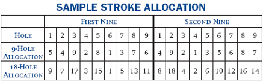
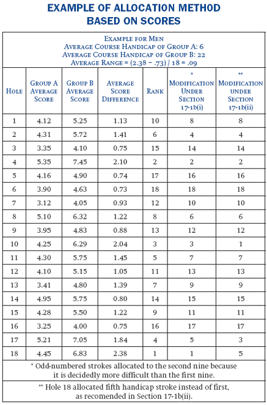
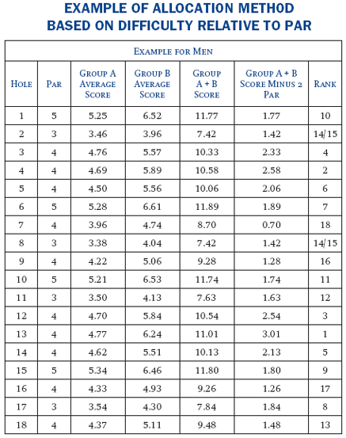

Section 17 ALLOCATION OF HANDICAP STROKES
Definitions
Within each section, all defined terms are in italics and are listed alphabetically in Section 2 - Definitions.
The basic principle of allocating handicap strokes is to equalize the abilities of players at different handicap levels. A handicap stroke should be an equalizer rather than a winning stroke and should be available on a hole where it most likely will be need by the higher-handicapped player to obtain a half in singles or four-ball match play. The following procedure is recommended but is not mandatory because it has minimal effect on handicaps (see Section 9-3). Stroke allocations for men and women will usually be different because the need to equalize holes may vary from hole to hole The Handicap Committee should use good judgment when reviewing the course hole-by-hole. Difficulty in making par on a hole is not an effective indicator of the need for a stroke (see Section 17-5).
 a. Basis of Allocation
a. Basis of Allocation
Allocate strokes based on play of the course from the tee markers used most often by the majority of club members.
Allocate the first stroke to the hole on the first nine on which the higher-handicapped player most needs a stroke as an equalizer and the second stroke to the hole on the second nine on which the higher-handicapped player most needs a stroke as an equalizer. Alternate in this manner for the full 18 holes.
Generally the longer the hole, the greater the need for the higher-handicapped player to receive a stroke.
 b. Distribution of Strokes
b. Distribution of Strokes
(i) Odd Strokes/Even Strokes
The USGA recommends that the odd-numbered strokes be assigned to the holes on the first nine and the even-numbered strokes to the holes on the second nine.
This format equalizes, as nearly as possible, the distribution of handicap strokes over the entire 18 holes, and makes matches more equitable. In a case where the second nine is decidedly more difficult than the first nine, consideration should be given to allocating odd-numbered strokes to the second nine.
(ii) Importance of Low Strokes
The first handicap stroke should be allocated so that this stroke is most useful in matches between players of almost equal ability, such as matches involving players with a Course Handicap of 0 and 1, 10 and 11, or 29 and 30. In such matches, the first handicap stroke will be of the greatest importance as an equalizer to the player receiving the stroke.
In allocating the second handicap stroke, matches between players having a slightly greater difference in Course Handicap should be given the most consideration, such as matches involving players with a Course Handicap of 0 and 2, 10 and 12, or 29 and 31. This process should be continued until the first six strokes have been assigned.
Without substantially deviating from the above principles, allocating low-numbered strokes to holes near the end of each nine should be avoided so that players receiving strokes will have the opportunity to use these strokes before either nine or 18-hole matches are decided. Lower-numbered strokes should not be allocated to the first and second holes of a course in the event that a hole-by-hole playoff is necessary.
A mathematical method for allocating strokes, based on the principle that a handicap stroke should be an equalizer when an average or high-handicapped player plays a low-handicapped player, follows. This procedure may be applied separately with men's scores and women's scores.
Note: When using all score methods, the Handicap Committee must give priority to the considerations of 17-1. See step (vii) below.
 a. Comparison Method
a. Comparison Method
(i) Collect about 200 hole-by-hole scores of a group of players (Group A) with a Course Handicap not exceeding 8 strokes for men and 14 strokes for women. A club having a limited number of low-handicapped players may use 200 scores from 25 percent of its players with the lowest Course Handicap. These scores should not be adjusted by Equitable Stroke Control.
(ii) Average the score for each hole for Group A, and average the Course Handicap of the players in Group A.
(iii) Collect about 200 hole-by-hole scores of a middle- to high-handicapped group of players (Group B). The average of the Course Handicap of each player in Group B should be 15 to 20 strokes higher than the average for each player in Group A. It is preferable for the Course Handicap of each player in Group B to range from 20 to 28 strokes for men and from 26 to 40 strokes for women. These scores should not be adjusted by Equitable Stroke Control.
(iv) Average the score for each hole for Group B and average the Course Handicap of the players in Group B.
(v) Determine the difference in the average scores for each group on each hole by subtracting the average score of Group A from the average score of Group B.
(vi) List the holes in order from 1 through 18 with corresponding Group A average scores, Group B average scores and average score difference. Rank the holes with the hole having the highest average score difference first, and so on. The hole ranked number 1 is the hole on which the higher-handicapped player most needs a stroke. Continue the rankings through 18.
(vii) Modify the rankings of the holes, as based on average-score differences in accordance with Section 17-1b on distribution of strokes, and in accordance with Notes 1 and 2 below.
Note 1: Occasionally, this method will result in one hole (Hole A) ranked ahead of another hole (Hole B). The Committee believes that Hole B should be ranked ahead of Hole A. The Committee may first determine the average range by subtracting the average-score difference of the 18th ranked hole from the average-score difference of the first ranked hole and divide the result by 18. If the difference between the average-score differences of Holes A and B is no greater than the average range, it would be appropriate for the Committee to rank Hole B ahead of Hole A.
Note 2: A hole with a water hazard that presents a significant problem for high-handicapped players may be ranked as the first or second handicap-stroke hole based on its average-score difference. The Committee believes that this ranking is not justified when players of comparable ability are competing. In this instance, the Committee may downgrade the ranking of the hole. The Committee should always use good judgment in deciding what will give fair results.
 b. Regression Method
b. Regression Method
An alternative method of allocating handicap strokes which uses all data points is to use linear regression. A minimum of 400 hole-by-hole scores is required from players representing the full range of Course Handicap. This is similar to the method in "Section 17-2a" of allocating handicap strokes using a large number of scores, but instead of comparing an average of scores among two distinctively-defined groups (Group A and B) with a large disparity in Course Handicap, the regression method uses all scores covering the whole Course Handicap range to allocate handicap strokes.
Step 1: Collect a large number N (at least 400 (more is better)) hole-by-hole scores from the same tee and gender.
Step 2: For each hole, take each of the hole-by-hole Course Handicap/score pairs and compute:
1) The sum of all the Course Handicaps = S1 (this value is the same for all holes)
2) The sum of all the scores = S2
3) Compute square of each Course Handicap and then sum all these squared values = S3 (this value is also the same for all holes)
4) Compute the product of Course Handicap multiplied by score for each handicap/score pair and then sum these values = S4
5) Compute the difference factor (DF)
DF = (N x S4) - (S1 x S2) divided by (N x S3) - (S12)
Note: A plus Course Handicap must be entered as a negative (-) number for the regression calculation.
Step 3: Rank all holes based on this DF value. The greater the DF the greater the expected score difference between a low and a high handicapped golfer (i.e., the hole with largest DF is handicap-stroke hole number one).
Step 4: Assign the final allocation of handicap strokes based on Committee's discretion.
These principles also apply to a nine-hole course played twice for a stipulated 18-hole round.
Strokes should be allocated to each nine holes separately -- 1 through 9. When two nines are combined for a handicap competition, the odd stroke-hole allocations should fall on the nine holes considered the first nine, and the even stroke-hole allocations should fall on the second nine. The example below shows the stroke-hole allocation for two nines combined for a competition.
In mixed competition, the separate 9-hole stroke allocations for men and women should be converted to separate 18-hole stroke allocations. (Exception, Section 9-3a.)

The Committee may develop a separate allocation table based on difficulty relative to par for four-ball stroke play, best-ball-of-four stroke play, and Stableford competitions.
In these forms of play, golf clubs often have found that comparing hole difficulty in relationship to par provides an effective basis for stroke allocation. If the golf club has used the method based on scores as described in Section 17-2, the following method can be used for stroke play to determine the relative difficulty in relation to par for the holes on a golf course. It averages the difficulty of holes of group A and B players to produce a representative difficulty in relation to par of the holes:
Total the group A and B average score for each hole;
Subtract from this sum two times the par of each hole;
Rank each hole result from largest to smallest;
Do not modify the rankings of the holes.

